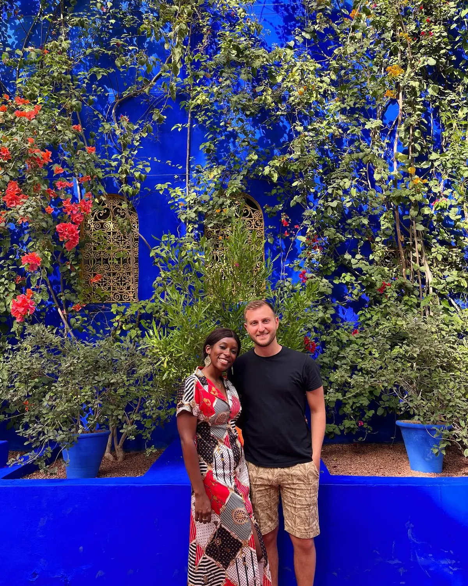

Marrakesh · The icon01
Majorelle Garden
📍 Jardin Majorelle · Gueliz
The dreamiest spot in the city — a lush botanical garden of bamboo, cacti and towering palms threaded with walls and fountains in that unmistakable electric cobalt, "Majorelle Blue." Created by the painter Jacques Majorelle and later saved and restored by Yves Saint Laurent, it's small but ravishing, and the on-site Berber Museum is worth it too. Book a timed entry ahead — the queue gets long — and go early to beat the crowds.
Go earlyMajorelle Blue
GetYourGuide
We booked this